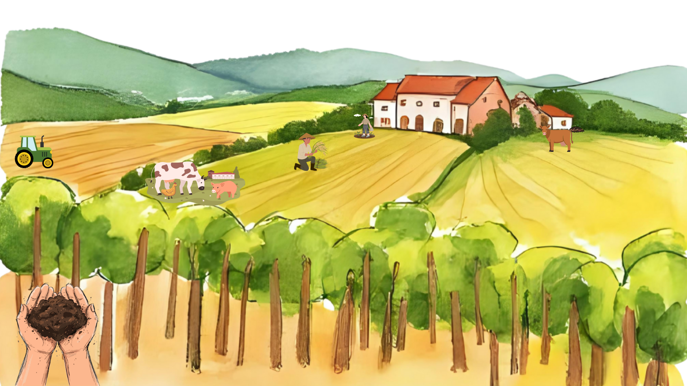

O que é a Agricultura regenerativa?
Horta que usa agrotóxicos.
É um modelo de produção que busca restaurar a saúde do solo sem retirar os recursos naturais dele.
É uma forma de produzir extraindo os minerais do solo, melhorando o ecossistema.
Show do Faustão
